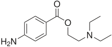

Ethylene oxide and Epichlorohydrin: Building Blocks in Organic Synthesis
Ethylene oxide is a valuable building block for organic synthesis because each carbon of its two-carbon skeleton has a functional group. Following is an illustration of some of the functional groups and types of molecules that can be generated from this building block. The key to recognizing a structural unit derived from ethylene oxide is the presence of an Nu—CH2—CH2—OH group. In cases where the —OH group is subsequently modified by replacement with another nucleophile, you will find the group Nu—CH2—CH2—Nu. The nucleophiles most widely used in modification of the —OH group are ammonia, 1° amines, and 2° amines (Section 1.3B). We have seen all of these reactions before, but not in this form.
The following two reactions, use carbon nucleophiles to open the three-membered ring and thus form new carbon-carbon bonds.
 | NC≡C−Na+ ⟶ | NC≡C—CH2—CH2—OH | H2/M ⟶ catalytic reduction | H2NCH2CH2CH2—OH |
| CH3—C≡C−Na+ ⟶ | HC≡C—CH2CH2—OH |
The following are openings of the epoxide ring by nitrogen nucleophiles.
| CH2NH2 ⟶ | CH3—NH—CH2CH2—OH | H2SO4 ⟶ | N-Methylmorpholine |
| CH3—N—(CH2CH2—OH)2 ⟶ | SOCl2 ⟶ | CH3—N—(CH2CH2—Cl)2 | NH3 ⟶ | 1-Methylpiperazine |
Last involves two successive SN2 reactions to form a nitrogen-containing ring.
An example of a compound, part of which is derived from the two-carbon skeleton of ethylene oxide, is the local anesthetic procaine. Here is a retrosynthetic analysis of procaine.
|  Procaine | ⟶ |  | + | HOCH2CH2—N—(CH2CH3)2 | ⟶ | Ethylene oxide | + | H—N—(CH2CH3)2 Diethylamine |
The hydrochloride salt of procaine is marketed under the trade name Novocaine. We will show how to complete the synthesis of procaine when we study the derivatives of carboxylic acids in Chapter 18. The epoxide epichlorohydrin is also a valuable synthetic building block because each of its three carbons contains a reactive functional group.
epichlorohydrin
The epoxide epichlorohydrin is also a valuable synthetic building block because each of its three carbons contains a reactive functional group.
Epichlorohydrin is an oily liquid, bp 118°C. It is insoluble in water and nonpolar hydrocarbon solvents, but soluble in polar aprotic solvents such as diethyl ether and dichloromethane. Epichlorohydrin is synthesized industrially by the following series of three reactions.
Step 1: Allylic halogenation by a radical chain mechanism (Section 8.6A).
 Propene | + Cl2 | 500 °C ⟶ | ClCH2C=CH2 3-Chloropropene (Allyl chloride) | + HCl |
Step 2: Treating the haloalkene with chlorine in water gives a chlorohydrin (Section 6.3E).
| ClCH2C=CH2 | + Cl2/H2O | ⟶ | ClCH2—(CH—OH)—CH2Cl + HCl |
Step 3: Treating the chlorohydrin with calcium hydroxide brings about an internal SN2 reaction and gives epichlorohydrin.
| ClCH2—(CH—OH)—CH2Cl + Ca(OH)2 | ⟶ | 3-Chloro-1,2-epoxypropane (Epichlorohydrin) (racemic) | + CaCl2 |
The characteristic structural feature of a product derived from epichlorohydrin is a three-carbon unit with 9OH on the middle carbon, and a carbon, nitrogen, oxygen, or sulfur nucleophile bonded to the two end carbons.

An example of a compound that contains the three-carbon skeleton of epichlorohydrin is nadolol, a β-adrenergic blocker with vasodilating activity.
For his work, Pedersen shared the 1987 Nobel Prize for chemistry with Donald J. Cram of the United States and Jean-Marie Lehn of France. The most significant structural feature of crown ethers is that the diameter of the cavity created by the repeating oxygen atoms of the ring is comparable to the diameter of alkali metal ions. The diameter of the cavity in 18-crown-6, for example, is approximately the diameter of a potassium ion. When a potassium ion is inserted into the cavity of 18-crown-6, the unshared electron pairs on the six oxygens of the crown ether are close enough to the potassium ion to provide very effective solvation for K+: